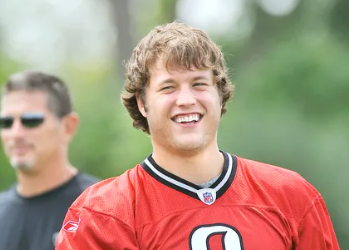
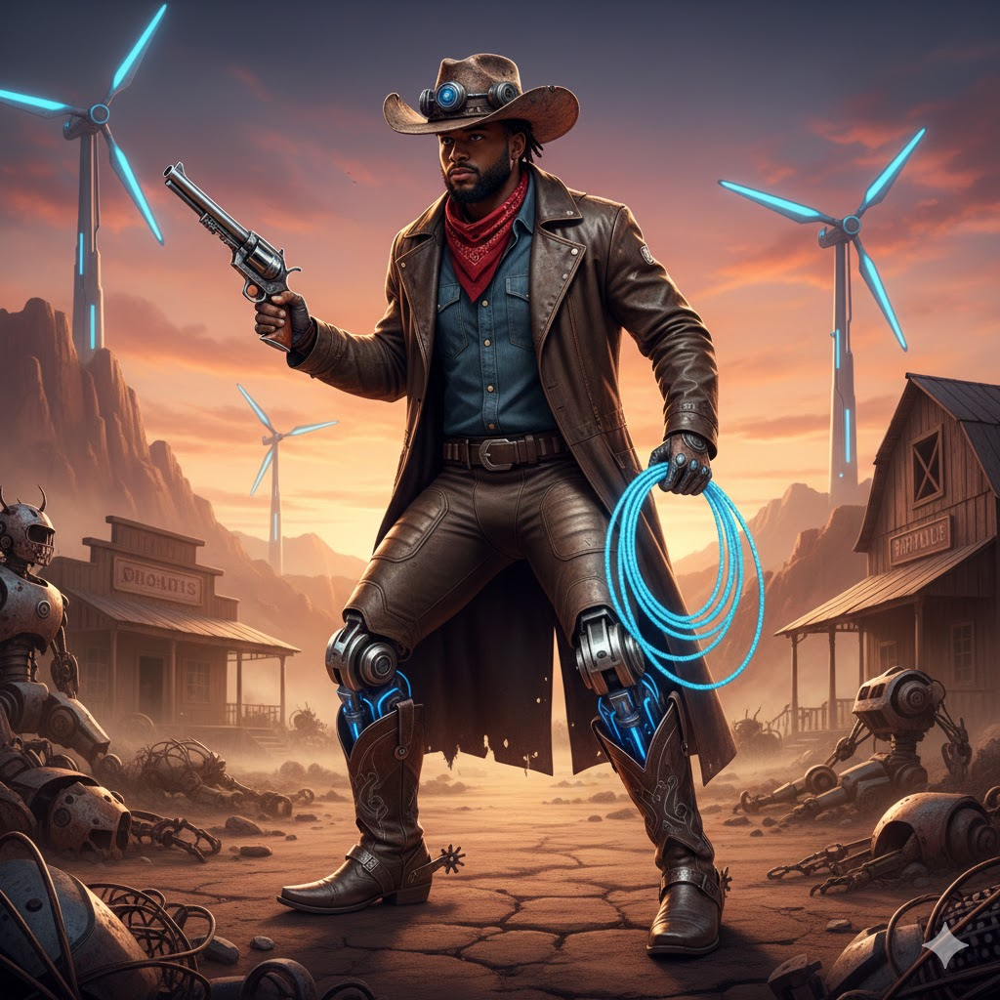
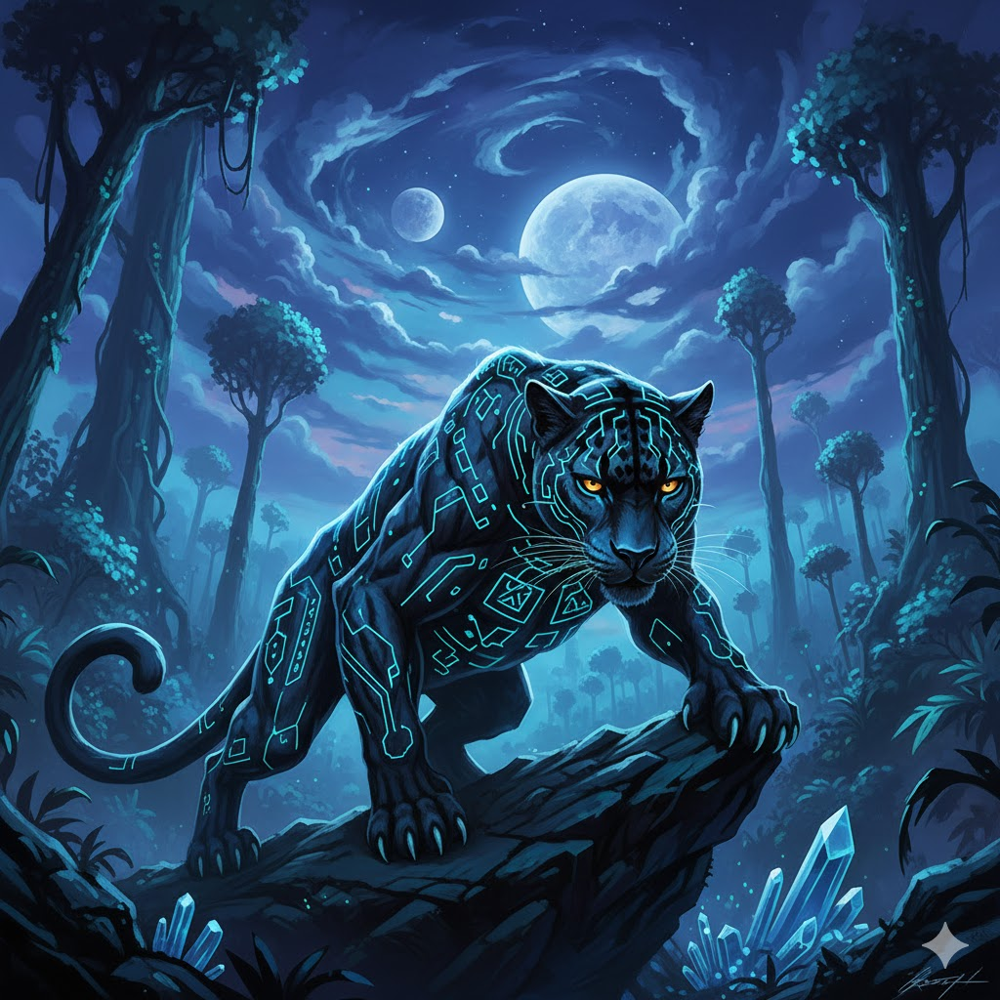
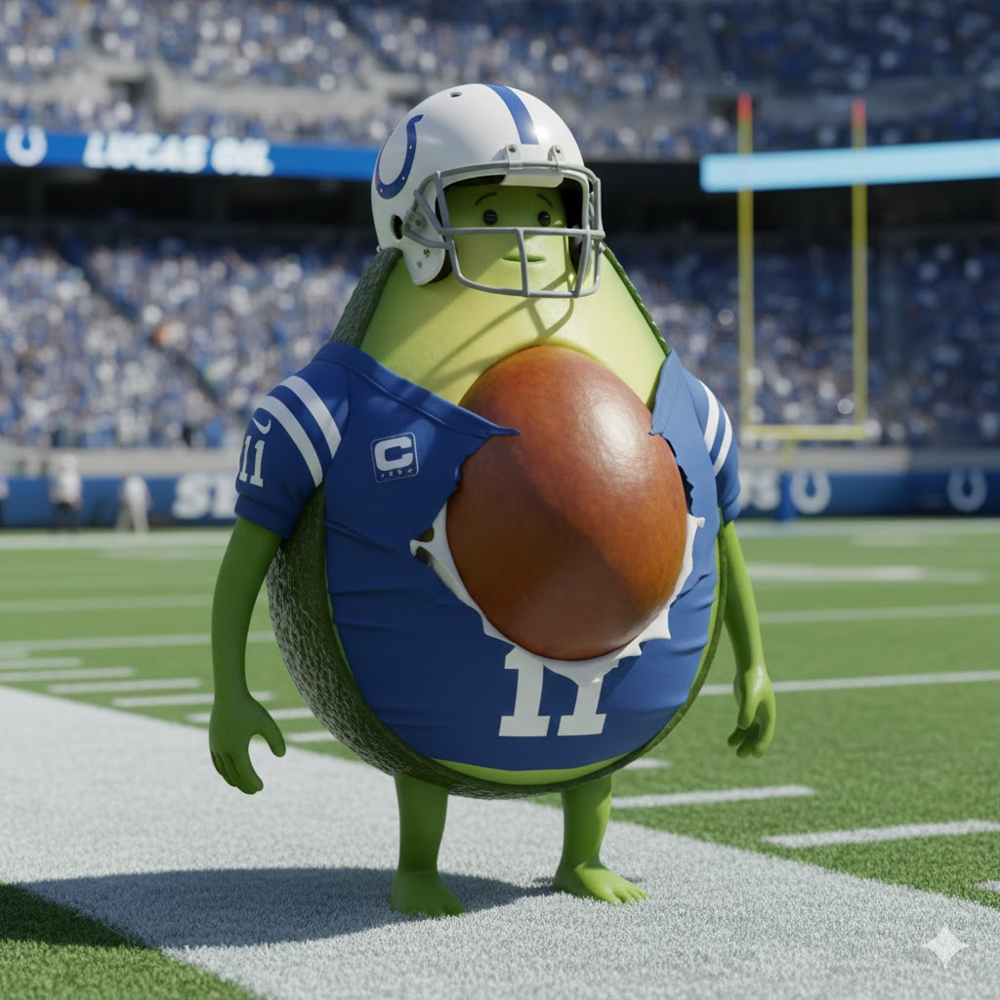
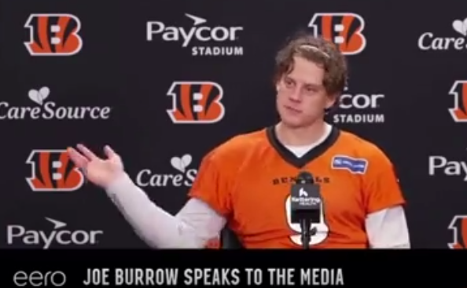

Well, here we are at the end… of the regular season. This week’s episode features a look at the playoff hunt/power rankings, a reminder of keeper and Sluter bracket rules, and a goodbye to the other folks. It’s kinda long so, let’s dive in. (next week we’ll get end of season awards)
Waiver Wire Spice 🌶️ * $25 - Kris - Buccaneers D/ST - no other bids, but they do have nice matchups the rest of the year. (my hunch is that Kris failed to remember that FAAB carries over into the postseason, oops) * $15 - Tony - Emanuel Wilson - Next highest bid was $3 (me), but, Josh Jacobs is coming back (didn’t know that at waiver time) * $2 - Devin Neal - Tweaked his ankle in practice today after Joel picked him up, despite being the de facto starter while Kamara is down.
🪫Playoff Hunt & Power Rankings by @Jake Bowen
There are a lot of matchups that matter this week, including for guys eliminated, but we’ll get there soon.
In the playoff mix, there’s a variety of outcomes, let’s see if I can go through them all quickly.
Kris is locked into the #1 spot. Joel, Jake and Neil are 7-5, PJ and Andy are 6-6, but Andy is too far behind in PF to have a real shot - he’s 150 behind Neil, who’s second-lowest in this grouping.
The 7-5 teams all control their destiny. Win and you’re in. There’s no matchups between these teams, either. There are many permutations of the final standings, but I think this covers most of them, and paints a picture of the potential scenarios.
Matchups: Mr. Turna 2-to-uh-Titanic (6-6) vs. Boswell that ends well (6-6) * Let’s assume PJ gets the win, for the sake of scenarios. If he loses, the current 7-5 teams can all lose and get in and we can stop here. * WTWF: What will Andy do with his $0 pick ups this week? Perhaps he can hit it big and end PJ’s run.
Achane Reaction (7-5) vs. Spitters not Quitters (9-3) How does he get in? * Win. * Lose, and score as many points as PJ (Joel’s lead is 1.06). * Lose, and hold the PF lead over a losing Jake (~23 pts) and/or Neil (~51 pts). * WTWF: I mean, it’s mostly just how many points is Kris gonna score and can Joel keep up. yeesh.
London Tee Party (7-5) vs. It’s just a Ladd (4-8) * Win. * Lose, and outscore PJ by ~22. * Lose, and hold a PF lead over losing Neil (~28 pts) * Lose, and outscore a losing Joel by (~23) * WTWF: After losing London, I lose Tee this week (and Egbuka loses Baker), my WR party isn’t feeling quite right.
Neon Keon (7-5) vs. I’m Sorry, Mc-Jackson, ooh (5-7) * Win. * Lose, and it’s an uphill battle. He’d need to catch PJ (~51 pts). Or, for Jake (~28) and/or Joel (~51 pts) to lose and to catch either of us. * WTWF: Similar to Joel, Neil’s up against a hot team. He’s also looking at a RB conundrum, as he has most of the year, with Rachaad White and Bam Knight currently in the lineup.
I know there are more possibilities here, but my head’s all twisted up like a pretzel now, so I’m going to move on.
Good luck, fellas.
At this point, the Power Rankings are basically exactly the fucking standings, because that’s all that matters this week. But let’s give them their flowers, as we’ll give out some flowers below for our team’s unsung heroes - the “we wouldn’t be here without you” guys. 🌹
(There’s also some sadder flowers below). 🥀
1. Kris (9-3) ↔️
PF: 1731.56
🌹 Unsung Hero: Travis Etienne We avoided ETN like the plague in the draft, as Kris grabbed him with pick 8.09. He’s been pretty dang good all year, with a couple top 7 weekly finishes at RB, keeping the floor (very) high for Kris at RB12 on the season.
Congrats on the first seed Kris, and locking up your first year of wearing normal clothes at the draft in a while. It really is a testament to how a man can change.
It’s gonna feel great not having to care about this week at all, too. 🥂
2. Joel (7-5) ⬆️⬆️
PF: 1503.62
🌹 Unsung Hero: Matthew Stafford Amon Ra, Devante and Achane make the most noise, but we gotta go with the odds-on MVP for the league. He’s as old as me, and has 30 TDs and just 2 INTs. QB6 on the year, despite having -9 rushing yards and no rushing TDs - breaking the fantasy football QB mold.
He’s only been on Joel’s team for the last three weeks, but he’s helped solidify Joel’s lineup after Baker’s arrow starting pointing down.

3. Jake (7-5) ⬆️⬆️
PF: 1479.5
🌹 Unsung Hero: Javonte Williams Although it was hard to pass up Zach Charbonnet sitting on my bench every week, I have to go with Javonte (RB8).
Since Week Two, if the Cowboys were playing, I was starting him without a doubt, and considering who to play at the other RB slot, between two first-round picks in Henry and Jeanty. There’s been regression in the last few weeks, but hoping that evens back out, as Dak’s just been slanging more TDs in the red zone, than earlier in the season.
Lastly, I was audibly disgusted at the draft when putting his name on the board with pick 10.3. Thank you, Javonte, for making me look dumb while helping me each week.

4. Neil (7-5) ⬇️
PF: 1451.68
🌹 Unsung Hero: Tetairoa McMillan This team was a bit harder, as Neil’s had to roll with a bunch of punches this year, and at one point essentially discarded his whole deck for a new team. But Tet’s been there since the beginning, joining the Neon’s in round 6 of the draft.
He hasn’t been perfect, but his lows haven’t been too low, and he’s starting to look like a star now… at the right time, coming in at WR8.

5. PJ (6-6) ⬇️⬇️⬇️
PF: 1502.56
🌹 Unsung Hero: Michael Pittman I’m not sure how many weeks he’s played in PJ’s lineup, but he’s just been a rock (WR10), and an abandoned one at that.
Andy picked him up off waivers, to drop him two weeks later, to pick him up again three days later for $11, then ultimately drop him so PJ could pick him up for $23 and provide him with a solid, stable home. (shame on you, Andy)
I know we’ll all be watching our own teams this week, but I got an idea that we’ll also be watching PJ and hoping his threepeat run ends here.

🪦Obituaries by @Joel Hernandez
6. Andy (6-6)
PF: 1301.16 Andy is still technically in the playoff hunt but he needs all the stars and planets to align for a shot at the last spot. This week he is asking Grok about astronomy to learn what planet in rising is going to get him into the playoffs. Andy was super active on the waiver wire this year - but maybe not in the right ways. There were a couple of times Andy would spend, drop, and then spend again for the same player. Leaving his purse pretty light early in the year. While it is good to cut players earlier rather than later - Andy was a little too quick on the trigger.
🥀 Generative AI experiment gone wrong and all the water/electricity wasted on this lackluster season
7. Seif (5-7)
PF: 1511.44 This one perplexes me a little bit. Seif’s PF puts him second in the league, his roster has the facade of being a contender, and his waiver wire activity was good. This team feels like it possibly should be in the playoff hunt. Alas the Fantasy Football gods had different plans. Or maybe his rival, the co-commish, was tweaking the points each week? Seif will be looking for his team to stay healthy through the slutler bowl. At the end of the day, we now have a proven track record that Seif can’t win a championship without someone else drafting for him.
🥀 Big spend on Travis Hunter only for him to get injured.
8. CJ (5-7)
PF: 1358.48 While CJ is in the slutler bowl his team has come alive a little. He has spent the past two weeks spoiling playoff lock-ins for PJ and myself. It seems like Dan Campbell taking over the reigns right before heading into the slutler bowl is giving him the boost he needs. He stayed faithful to AJ Brown despite his uninspired season. I can’t help but wonder if he took some better options from the waiver wire if he’d be in the hunt at the end the year. It feels like he was too invested in AJ, but maybe that’s just the kind of loyalty you can expect from CJ.
🥀 AJ Brown
9. Tony (4-8)
PF: 1366.46 It was a slow start for Tony with some of his draft picks not producing as consistently as expected. This is another team, that despite being on a 2 game skid, looks poised to turn it around. His WR #1 is getting Burrow back and who knows what the ceiling is for that duo. He rostered 4 RBs that were decent, but it made it tough to pick the right lineups. Only 87.5% sit start accuracy means he left quite a few points on the bench. Tony also wasn’t super active on the waiver this year. The majority of his spend came in the last two weeks. It’s allowed him to get the players he has wanted to position himself better in the slutler bowl. Saving FAAB for the slutler bowl is a loser mentality though.
🥀 Alvin Kamara
10. Pangy (4-8)
PF: 1283.50 Oh Pangy. It’s been a year. Despite a decent roster on paper he dealt with injuries throughout the season and had some real rough patches that fortunately has him going into last place entering the slutler bowl. I say fortunately cause that cake would look good in a skirt. Anyways, he didn’t end up there for a lack of effort. He was active on the waivers but things didn’t go his way. Like the others, his team is getting healthy again. He is getting Bucky back and possibly Terry, which should make things competitive at the end.
🥀 I don’t know man. Just do better?

“You grow up going through Thanksgiving — you have your meals, and you sit on the couch … watch the Lions vs. somebody…”
- Joe Burrow - just like us (there was more quote and context, but I’m not about that. welcome back, Joe Cool)
Good luck to everyone besides… Joel, Neil and PJ! - Jake 🐍